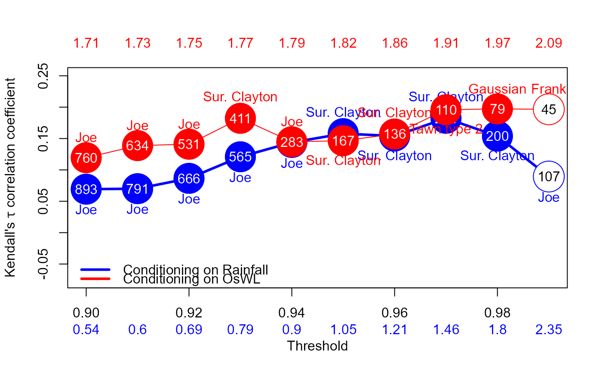

Copula_Threshold_2D_Lag.RdDeclustered excesses of a (conditioning) variable are paired with co-occurences of the other variable before the best fitting bivariate copula is selected, using BiCopSelect function in the VineCopula package, for a single or range of thresholds. The procedure is automatically repeated with the variables switched.
Copula_Threshold_2D_Lag(
Data_Detrend,
Data_Declust,
u1 = seq(0.9, 0.99, 0.01),
u2 = seq(0.9, 0.99, 0.01),
PLOT = TRUE,
Lag_Backward_Var1 = 1,
Lag_Forward_Var1 = 1,
Lag_Backward_Var2 = 1,
Lag_Forward_Var2 = 1,
x_lim_min = NA,
x_lim_max = NA,
y_lim_min = -1,
y_lim_max = 1,
Upper = NA,
Lower = NA,
GAP = 0.05,
Legend = TRUE,
Cex_Legend = 1,
Cex_Axis = 1,
Cex_Axis_Original = 1
)Data frame containing two at least partially concurrent time series, detrended if necessary. Time steps must be equally spaced, with missing values assigned NA.
Data frame containing two (independently) declustered at least partially concurrent time series. Time steps must be equally spaced, with missing values assigned NA.
A single or sequence of thresholds, given as a quantile of the observations of the variable in the first column of Data_Detrend when it is used as the conditioning variable. Default, sequence from 0.9 to 0.99 at intervals of 0.01.
A single or sequence of thresholds, given as a quantile of the observations of the variable in the second column of Data_Detrend when it is used as the conditioning variable. Default, sequence from 0.9 to 0.99 at intervals of 0.01.
Logical; whether to plot the results. Default is "TRUE".
Numeric vector of length one specifying the negative lag applied to variable in the first column of Data_Detrend. Default 1.
Numeric vector of length one specifying positive lag applied to variable in the first column of Data_Detrend. Default 1.
Numeric vector of length one specifying negative lag applied to variable in the second column of Data_Detrend. Default 1.
Numeric vector of length one specifying positive lag applied to variable in the second column of Data_Detrend. Default 1.
Numeric vector of length one specifying x-axis minimum. Default is NA.
Numeric vector of length one specifying x-axis maximum. Default is NA.
Numeric vector of length one specifying y-axis minimum. Default -1.0.
Numeric vector of length one specifying y-axis maximum. Default 1.0.
Numeric vector specifying the element number of the u1 argument for which the copula family name label to appear above the corresponding point on the Kendall's tau coefficient vs uhold plot, when conditioning on the variable in column 1. Default is NA.
Numeric vector specifying the element number of the u2 argument for which the copula family name label to appear below the corresponding point on the Kendall's tau coefficient vs uhold plot, when conditioning on the variable in column 2. Default is NA.
Numeric vector of length one specifying the distance above or below the copula family name label appears the corresponding point on the Kendall's tau coefficient vs uhold plot. Default is 0.05.
Logic vector of length one specifying whether a legend should be plotted. Default is TRUE.
Numeric vector of length one specifying the font size of the legend. Default is 1.
Numeric vector of length one specifying the font size of the axes. Default is 1.
Numeric vector of length one specifying the font size of the values of the quantiles on the original (data) scale (i.e. second x-axis). Default is 1.
List comprising:
Kendalls_Tau1
Kendall's tau of a sample
p_value_Var1
p-value when testing the null hypothesis H_0=0 i.e. that there is no correlation between the variables
N_Var1
size of the dataset
Copula_Family_Var1
best fitting copula for the specified thresholds
when the dataset is conditioned on the variable in column 1.
Analogous vector Kendalls_Tau2, p_value_Var2, N_Var2 and Copula_Family_Var2 for the specified thresholds when the dataset is conditioned on the variable in column 2.
If PLOT=TRUE then a plot of the Kendall's tau correlation coefficient versus quantile threshold is also returned.
Filled circles denote statistically significant correlation at a 5% significance level. Numbers inside the circles correspond to the sample size while the best fitting copula family is printed above.
Numbers below x-axis are the values of the corresponding quantiles on the original (data) scale.
Copula_Threshold_2D_Lag(Data_Detrend=S20.Detrend.df[,-c(1,4)],
Data_Declust=S20.Detrend.Declustered.df[,-c(1,4)],
y_lim_min=-0.075, y_lim_max =0.25,
Upper=c(6,8), Lower=c(6,8),GAP=0.1)

#> $Kendalls_Tau1
#> [1] 0.06927933 0.07008858 0.08656006 0.12093604 0.14377645 0.15781648
#> [7] 0.15400894 0.18224073 0.15389326 0.08945490
#>
#> $p_value_Var1
#> [1] 2.020781e-03 3.284963e-03 8.638247e-04 1.807310e-05 1.423461e-06
#> [6] 1.247099e-06 1.354082e-05 4.957090e-06 1.248627e-03 1.731031e-01
#>
#> $N_Var1
#> [1] 893 791 666 565 506 425 360 284 200 107
#>
#> $Copula_Family_Var1
#> [1] 6 6 6 6 6 13 13 13 13 6
#>
#> $Kendalls_Tau2
#> [1] 0.1194358 0.1387501 0.1409750 0.1822204 0.1448503 0.1465429 0.1572222
#> [8] 0.1959247 0.1972220 0.1966452
#>
#> $p_value_Var2
#> [1] 2.077031e-06 4.646026e-07 2.558094e-06 8.769150e-08 3.712186e-04
#> [6] 5.702464e-03 7.394536e-03 2.736557e-03 1.092366e-02 5.865988e-02
#>
#> $N_Var2
#> [1] 760 634 531 411 283 167 136 110 79 45
#>
#> $Copula_Family_Var2
#> [1] 6 6 6 13 6 13 13 204 1 5
#>